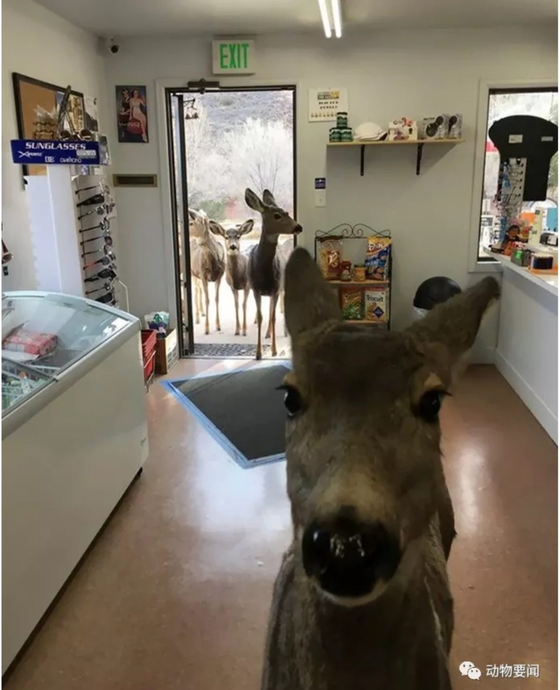
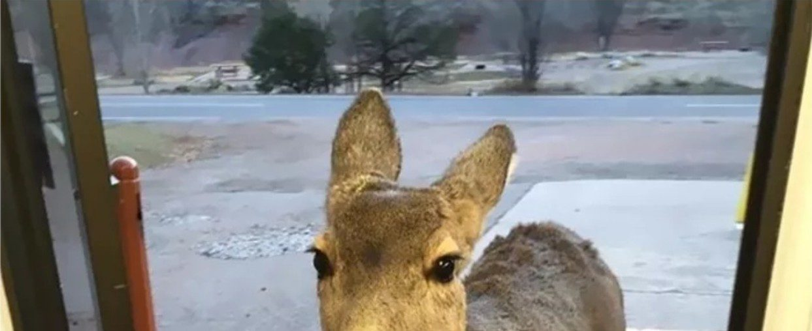
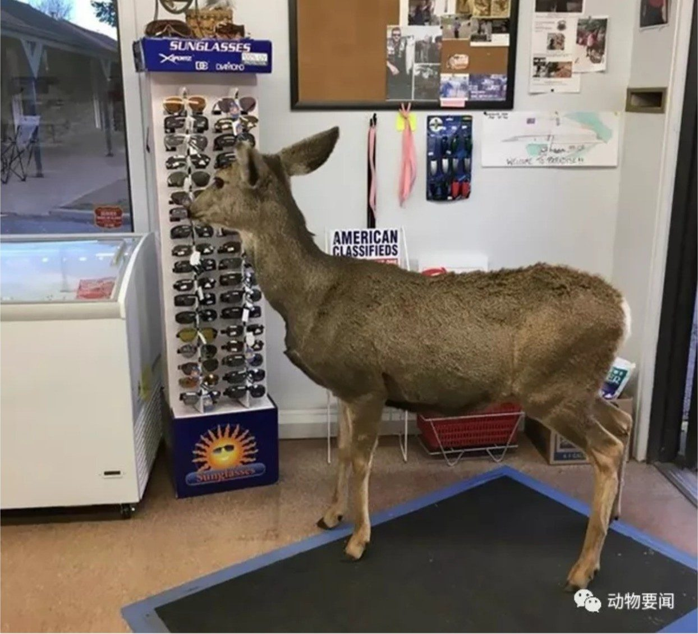
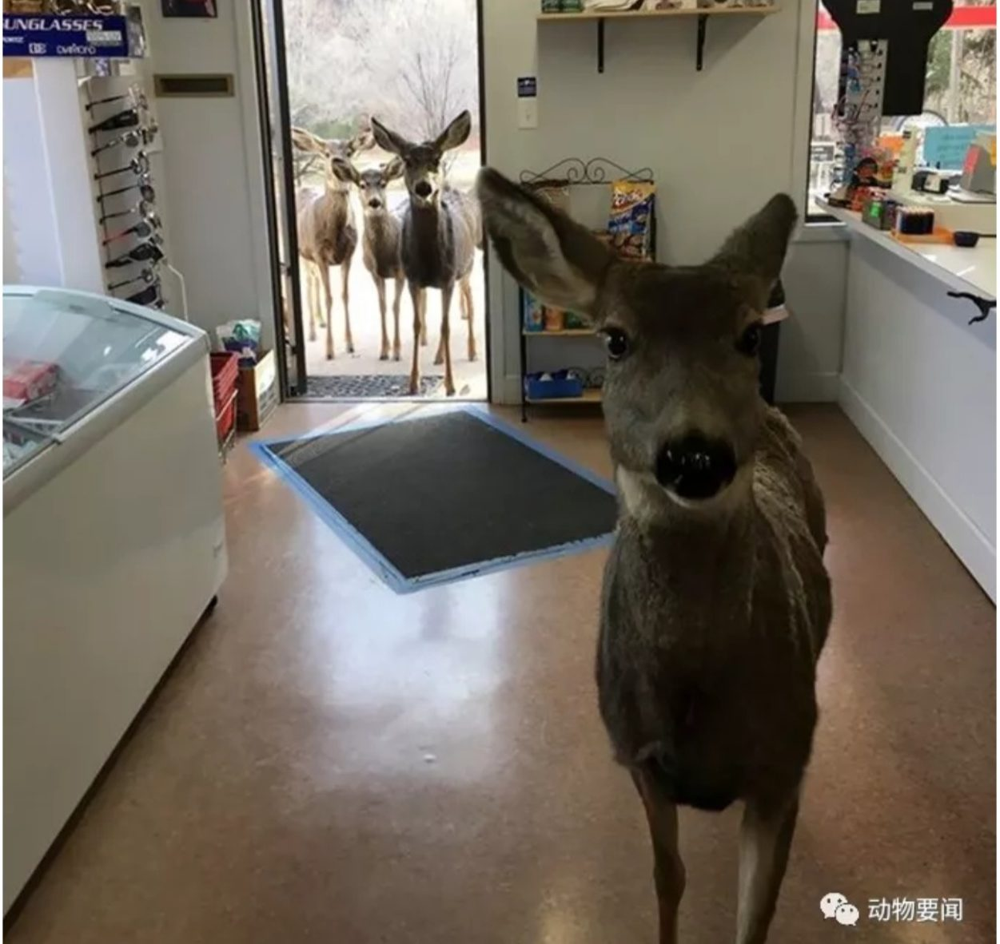

一只鹿走进商店
半小时后，它把全家都带来了
它先进来逛了一圈，一样东西没买。店员给了它一点吃的。半小时后，它回来了——带着全家。这家店表示，那天下午的客流量超出了预期。

事情发生在科罗拉多州的一家路边小店。一天下午，一只鹿自己走到门口，朝里面看了看，就进来了。
它在店里慢慢转了一圈，在纪念品货架前站了很久，看看这个，看看那个，一样都没碰。店员没见过这么有礼貌的顾客，给了它一点吃的。鹿吃完，走了。
大约半小时后，门口又有了动静。那只鹿回来了，身后跟着一家老小，在门外站得整整齐齐，像在等它介绍：就是这儿。
店员又给了一圈吃的，鹿一家满意离开。店方表示欢迎再来，同时补充说，下次它们自己来就好，真的不必这么客气。
01

它先自己来了。在门口站定的样子，像在等店员说一句欢迎光临。
02

它在纪念品货架前认真看了很久。一样都没买，很有教养。
03

半小时后，它带着全家回来了。家属们在门外站得很整齐，等它发话。
编译线索 · Bored Panda ｜ 图 · 店方社交账号发布